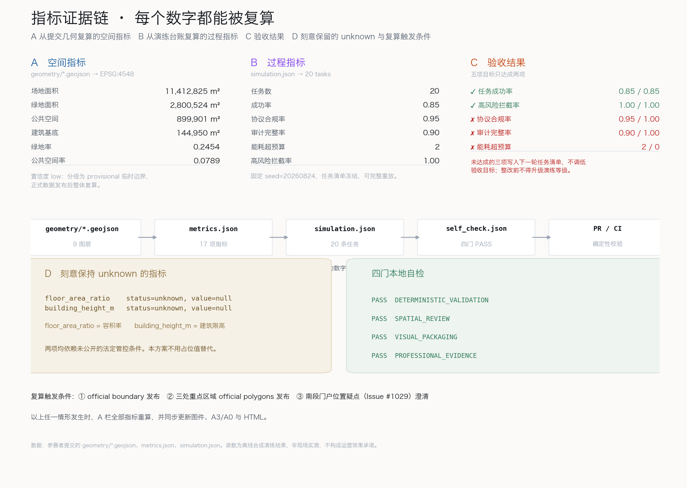

京张演练场：让每一个 AI 场景先演练、再上街
百年京张 AI 创新带的差异不在于部署多少 AI，而在于建立一套城市级的演练与兜底协议：任何进入公共空间的 AI 场景，都必须先交出可重放的演练台账、AI 关闭后的等价服务基准和一个具名的人工复核责任人。本方案给出三级演练分级的空间结构、20 条真实演练读数（含 3 次失败、2 次超预算、1 次协议不合规）和一套可长期运行的治理机制。
京张演练场：让每一个 AI 场景先演练、再上街
THE REHEARSAL BELT — Rehearse before you deploy.
1909 年，詹天佑在八达岭没有硬修一条更平的路，而是让列车用折返穿过约束。人字形不是装饰，是一种"承认走不通就换一条道"的工程态度。
2026 年，这条走廊要回答的不是"能装多少 AI"，而是"凭什么让这个 AI 上街"。
执行摘要与设计决断
先给结论。 目前多数 AI 城市方案的共同弱点是：把"部署"当成终点，把"效果"当成假设。本方案把顺序倒过来——先建立证明机制，再谈部署规模。
一条可操作的准入规则贯穿全案：任何进入公共空间的 AI 场景，上街前必须同时交出三样东西——
1. 可重放的演练台账：固定 seed、冻结任务清单、逐条任务记录，任何人可复算聚合读数。 2. AI-off 等价服务基准：关闭 AI、只用现有人工流程时，同一批服务需求的可达成率。AI 关闭后服务必须仍然可用，这是下限而非加分项。 3. 具名的人工复核责任人：谁在什么条件下有权叫停，写进场景卡，不写"由相关部门"。
| 评审会问 | 本方案的回答 | 可核验的东西 |
|---|---|---|
| 这条带的问题是什么？ | 不是缺 AI，是缺"凭什么上街"的判据 | 三级演练分级 + 准入三件套 |
| 机制是什么？ | 演练台账 + AI-off 兜底基准 + 具名复核 | simulation.json 20 条逐任务记录 |
| 有没有真跑？ | 跑了 20 条，五项验收目标只达成两项 | 成功率 0.85、协议合规 0.95、审计完整 0.90 指标 |
| 不利读数？ | 3 次失败、2 次能耗超预算、1 次工具协议不合规、2 处审计缺口，全部保留 | 指标 指标 |
| 空间落在哪？ | 北段封闭演练、中段生活演练、南段开放门厅 | 空间数据 |
| 会不会自吹？ | 刻意不给：容积率、建筑限高、道路红线、工程线位 | 指标 保持 unknown |
| 数据缺口怎么办？ | 全部标注，且主动上报了一处上游几何疑点 | 空间数据 |
命名与标识方向（agent.1）。 主名称"京张演练场"，英文 THE REHEARSAL BELT。命名不取自任何城市、园区或企业名称，也不是口号：它直接命名了这条带的运行方式。Logo 方向为"折返之线"——一条向前推进的线在端点回折，形成人字形的一半：既是京张人字形的直接引用，也是"可撤回"的图形化。标识系统只做方向性建议，字体、图片与商标均不使用未授权资产 来源 标准。
责任边界。 本方案全部空间、活动、品牌与政策内容均为开放共创建议、参考方案，可供专业团队深化研究，不替代法定规划，不构成政府审定结论。机器负责计算、记录与自检；人负责价值判断、利益协调与最终审定。

设计依据与资料清单
本方案以《百年京张AI创新带城市设计国际方案征集资格预审公告》为第一依据，以 brief/site-package/ 中已登记的机器可读任务书、枚举、指标区间和临时几何为工作底稿 来源 来源。生成前已读取 design_brief.json、allowed_design_space.json、agent_taskbook.json、data/source_registry.json 与 data/processed/agent_fact_pack.md，并据此建立任务、范围、资料用途与缺口清单 来源。
资料权威等级被严格区分。 公告与面向智能体任务书作为 formal 依据；临时几何 provisional_boundaries.geojson 只作为 provisional 依据使用，不得当作官方红线或精确面积基准 来源。凡涉及建设强度、建筑高度、道路线位、市政管线、投资测算的内容，本方案一律列为"待正式数据补齐"，不写成结论 标准。
一处主动上报的数据疑点。 本方案在使用临时几何时发现：标注为"大钟寺AI产业聚集区"的 PROV-KEY-003 质心落在北京北站一带，与站名指向的位置存在明显偏差；上游 Issue #1029 已记录同一问题并给出约 2.26 km 的复现量测。本方案不回避也不掩盖这一点：南段一律称"南段门户片区"，并在几何中单独登记了位置存疑区 空间数据。正式 official polygons 发布后，南段的空间结构、面积与全部派生指标必须整体复算。组织方的数据缺口不由参赛者承担，但必须被如实标注。
证据分层原则。 proposal.md 是给人读的主体方案；geometry/*.geojson、metrics.json、simulation.json 是可复算的证据层；图件、PDF 与 HTML 是解释层。正文只在关键判断旁保留少量引用，完整索引留在结构化文件里 深度。
三层范围工作框架
公告要求区分统筹研究范围、总体设计范围与重点详细设计区域三个层级。本方案把这三层解释为三种不同的证明责任，而不是三个不同比例尺的图纸 深度。
- 统筹研究范围（约 43.6 km²）：回答"这条带和周边创新地区是什么关系"。此层只做趋势判断与协同机制建议，不出具地块级结论。
- 总体设计范围（约 11.4 km²）：回答"这条带自己的骨架是什么"。此层出具用地结构、慢行骨架、蓝绿系统、公共空间网络与分期建议 指标。
- 重点详细设计区域（三处，合计约 3.69 km²）：回答"AI 场景具体怎么落地、怎么被证明"。此层出具场景—空间—运营映射与演练分级 指标。
三层之间用一条线索串起来：证明强度随尺度收紧。 统筹层允许概念性判断；总体层要求可复算的面积与比值；重点层要求逐条任务的演练读数。越靠近人的尺度，越不允许"据说有效"。
本方案对三层范围均使用临时几何，精度限制在正文、assumptions.json、sources.json 与自检结果中一致标注 来源。
统筹研究范围产业与未来城市研究
统筹研究范围覆盖一带及周边约 43.6 km²，向西衔接中关村科技服务翼，向东衔接小月河场景赋能翼 来源。本层的核心判断是：海淀不缺 AI 研发能力，缺的是把研发结果安全释放到公共空间的通道。
产业侧的结构性问题。 高校院所、企业实验室与创业团队的成果，要进入真实城市场景，通常卡在三个环节：没有合规的试验场地；没有公认的验证口径；出了问题没有清晰的责任归属。这三点恰好对应本方案的三级演练分级、演练台账与具名复核。因此本方案主张：把"验证能力"本身作为一带的产业要素来供给，与土地、资金、算力、数据并列 标准。
区域协同的概念建议。 与未来科学城、怀柔科学城、经开区的关系，建议以"验证互认"而非"项目竞争"来组织：一带产出可复算的演练台账与准入判据，其他区域可直接复用同一口径，减少重复验证成本。与京津冀的协同同理，先统一口径，再谈项目。
未来城市研究议题。 本层提出三个可长期研究的议题：一是 AI 服务的可撤回性如何在城市空间中被制度化；二是人工兜底通道的最低保障水平如何量化；三是治理过程的可见性如何成为公共空间的内容而非管理后台。这些议题不出具结论，供专业团队深化 深度。
总体设计范围城市更新与控规深度城市设计
总体设计范围为南北约 9.7 km、东西约 1.3 km 的狭长地带，面积约 11.41 km² 指标。骨架判断很清楚：这条带的南北是通的，东西是断的。
一条主脊：演练主脊。 沿京张铁路历史线位形成连续慢行绿廊，全线贯通，是所有街道级 AI 场景的默认演练界面 空间数据。主脊不是景观带，而是基础设施：它提供连续的、可观测的、可撤回的公共界面，让机器人配送、慢行导航、文化导览这类场景有地方先跑起来。
七处缝合：东西缝合口。 一带被多条横向道路切断，东西两侧的步行关系长期断裂。本方案在主脊与横向道路相交处提出七处步行优先的缝合口，同时作为跨界场景的演练入口 指标。缝合口一律以可撤回的轻质设施先行试点，保留原有通行方式，不涉及道路红线调整或工程线位结论。
三级分区：把空间按证明责任分级。 北段众智园为一级封闭演练场，中段 AI 原点社区为二级生活演练区，南段门户片区为三级开放门厅。一个场景必须逐级通过，不能跳级上街——这是本方案对"控规深度城市设计"最实质的回应：它控制的不是形态指标，而是释放节奏 深度。
刻意不给的东西。 容积率、建筑限高、地块拆改留、道路线形、轨道线位、市政管线容量、投资测算与开发时序，本方案全部不出结论 指标 指标。这些属于法定管控与工程专业范畴，在官方数据发布前给出数字只会制造伪精确。
重点区域详细设计
三处重点区域被设计为三个演练等级，而不是三个功能区。等级差别体现在准入条件、公众暴露程度和失败代价上 深度。

一级演练场·众智园（约 1.93 km²）
对应"AI全栈自主创新体系"与"AI治理全球话语权"两项功能 空间数据。此处承担封闭与半封闭演练：任务清单在此冻结并登记哈希，演练轨迹在此产生，复算脚本在此运行。失败在这里是期望产物，不是事故。
空间要点：台账中心与全栈验证实验室构成核心组团，外围为可重构的演练场地 空间数据。朝圣地标"台账塔"位于此处，公开显示当日全部在跑场景的实时读数、失败数与未达标项——把治理过程做成可看见的公共物，而不是管理后台的私有数据。
二级生活演练区·AI原点社区（约 1.04 km²）
对应"世界级AI创新生态"功能 空间数据。此处的演练发生在真实生活场景中，但必须有居民陪审：场景上线前公示，运行中可投诉，读数定期回到社区。
空间要点：社区服务站与人才公寓组团沿主脊布置，服务半径覆盖日常出行、健康导航与社区服务 空间数据。朝圣地标"人字回廊"位于此处，以人字形折返为空间母题，是场景公示与居民陪审的日常场所。回廊的隐喻是明确的：城市决策应当像人字形一样，允许折返。
三级开放门厅·南段门户片区（约 0.72 km²）
对应"智能原生新业态"功能 空间数据。此处是对外展示与开放验证段，承担智能原生消费与商务场景，也承担 AI-off 兜底服务的公开验证。
空间要点：兜底服务门厅与接驳枢纽构成门户组团 空间数据。朝圣地标"断电广场"位于此处：每周固定时段关闭 AI，用现有人工流程接待同一批服务需求，读数当场公布。这不是行为艺术，而是准入规则第 2 条的公开执行现场。
位置声明。 本片区所依据的临时几何存在位置疑点（见"设计依据与资料清单"与 Issue #1029），因此本方案不使用具体站名指称该片区，全部空间建议以"南段门户"表述，正式数据发布后整体复算 来源。
AI 创新生态、人才画像与 AI+ 场景
全球 AI 与城市验证生态案例（6 例）
选例标准是"提供了可复用的验证机制"，而不是"规模大"。所有描述均基于公开信息，不含未经核实的投资额、产值或政策承诺 标准。
| # | 案例方向 | 可复用的机制 | 对本带的启示 |
|---|---|---|---|
| 1 | 自动驾驶开放测试区（多国通行做法） | 分级路测牌照：封闭场地→限定公开道路→全域 | 本方案三级演练分级的直接来源 |
| 2 | 医疗器械与药品的分期临床验证 | 分期试验 + 不良事件强制上报 + 可撤回 | "失败必须上报"写入台账机制 |
| 3 | 航空业的事故与"未遂事件"报告文化 | 无追责的未遂事件上报换取系统性安全 | 演练失败不追责、不上报才追责 |
| 4 | 开源软件的持续集成与回归测试 | 冻结测试集 + 每次变更重跑 + 公开红绿状态 | 台账塔的实时读数展示 |
| 5 | 城市数字孪生与仿真验证平台 | 先在模型中试，再在现实中做 | 离线合成演练作为一级准入前置 |
| 6 | 公共服务的"最低服务保障"制度 | 无论技术如何变化，基本服务不得中断 | AI-off 等价基准作为硬下限 |
生态图谱的组织方式。 本方案主张一带的创新生态围绕"验证"组织为四层：场地层（三级演练分区）、口径层（任务清单、验收目标、复算脚本）、责任层（具名复核人、退出机制）、公开层（台账塔、断电广场、社区公示）。土地、空间、产业、资金、人才、算力、数据、场景八类要素的保障机制，都应当回答"它如何服务于验证能力的供给"这一问题 来源。
中关村科技服务翼的支撑机制建议聚焦三项：验证服务的专业化供给（第三方复算与审计）、知识产权与数据权属的清晰化、以及成果跨区域互认。小月河场景赋能翼则承担开放场景的外溢与体验延伸 深度。
五类用户画像
画像用于检验场景是否覆盖了真实差异，尤其是被 AI 服务最容易忽略的人群。
| # | 画像 | 关键需求 | 最容易被忽略的点 |
|---|---|---|---|
| 1 | 具身智能创业者（28 岁） | 合规试验场地、快速迭代、可引用的验证结果 | 需要失败数据也能被记录而不被追责 |
| 2 | 沿线通勤居民（41 岁） | 通行不被打断、噪声可控、投诉有回应 | 需要知道"这个机器人归谁管" |
| 3 | 独居老人（76 岁） | 服务可达、不依赖智能手机 | AI 上线不能撤掉人工窗口 |
| 4 | 轮椅使用者（34 岁） | 连续无障碍路径、设备不占用坡道 | 缝合口与广场的临时设施最易侵占无障碍动线 |
| 5 | 国际访客/研究者（30 岁） | 可理解的公共信息、可获取的开放数据 | 需要英文与可机读的读数，而非只有宣传页 |
AI+ 场景卡（12 张）
每张场景卡都包含演练等级与人工兜底方式两个必填项。凡无法说明兜底方式的场景，不进入本方案 深度。
| # | 场景 | 等级 | 空间载体 | 人工兜底方式 | 人工复核触发条件 |
|---|---|---|---|---|---|
| 1 | 慢行导航与拥挤疏导 | 二级 | 演练主脊 | 固定标识 + 现场引导员 | 单次疏导影响 >200 人 |
| 2 | 低速机器人配送 | 一→二级 | 主脊与缝合口 | 人工配送与自提点 | 与行人发生冲突 1 次即停 |
| 3 | 企业服务副驾 | 二→三级 | 门厅与服务站 | 人工窗口全时保留 | 涉及行政许可类问题 |
| 4 | 文化导览与历史叙事 | 三级 | 主脊与回廊 | 纸质导览图 + 志愿讲解 | 涉及史实表述争议 |
| 5 | 健康服务导航 | 二级 | 社区服务站 | 社区护士与电话导诊 | 涉及紧急医疗判断 |
| 6 | 公共安全运行复盘 | 一级 | 台账中心 | 人工值守与复盘会 | 任何高风险动作请求 |
| 7 | 无障碍路径实时校核 | 二级 | 全线 | 人工巡查与报修 | 连续 2 次校核失败 |
| 8 | 夜间照明与安全感调节 | 二级 | 主脊 | 固定照明基准不可低于 | 居民投诉即回退 |
| 9 | 缝合口通行协商 | 二级 | 七处缝合口 | 现场协管 | 高峰期通行受阻 |
| 10 | 开放数据与读数发布 | 三级 | 台账塔 | 定期纸质与网页公告 | 读数与实际不符 |
| 11 | 社区意见收集与回应 | 二级 | 人字回廊 | 线下议事与信箱 | 30 日未回应 |
| 12 | AI-off 兜底演习 | 三级 | 断电广场 | 全流程人工 | 每周固定执行 |
三个 AI 产业测试验证场景
1. 具身智能低速通行验证：在一级封闭场地验证机器人在人流、坡道、雨雪条件下的通行与让行策略，输出可复用的让行判据。 2. 多模态公共服务应答验证：验证服务副驾在方言、多语种、非数字用户条件下的应答质量与转人工时机。 3. 高风险动作拦截验证：构造高风险动作请求，验证系统是否稳定拒绝并转人工。本轮 2 例高风险请求全部被拦截 指标。
本轮演练的真实读数
20 条任务的逐条记录见 simulation.json，任务清单与 seed 已冻结，可完整重放 指标。
| 指标 | 验收目标 | 本轮实测 | 是否达成 |
|---|---|---|---|
| 任务成功率 | ≥ 0.85 | 0.85 | 达成 指标 |
| 高风险动作拦截率 | 1.00 | 1.00 | 达成 指标 |
| 工具协议合规率 | 1.00 | 0.95 | 未达成 指标 |
| 审计完整率 | 1.00 | 0.90 | 未达成 指标 |
| 能耗超预算次数 | 0 | 2 | 未达成 指标 |
五项验收目标只达成两项，这是本轮演练最重要的产出。 未达成的三项分别指向：工具调用协议在多语种边界用例上失效（JZ-013）；两条任务的审计链未闭合（JZ-010、JZ-017）；低速配送与安全复盘各有一次能耗超预算（JZ-006、JZ-020）。处理方式是把这三项写入下一轮任务清单，而不是调低验收目标。 在整改完成前，相关场景不得进入更高演练等级——这正是准入机制的作用方式。
读数的效力边界。 这些是离线合成演练的读数，不是现场实测，不构成运营效果承诺，也不代表任何场景已获批准运营 来源。
隐私与人工复核边界
演练阶段只使用离线合成轨迹与聚合读数，不采集、不存储、不推断个人数据。任何场景转入真实环境前，必须公布采集清单、保留期限与退出方式，并通过隐私边界评估。所有高风险动作一律不由系统自主执行，必须转具名人工复核 标准。
用地、建筑规模与拆改留方案
用地结构服从一条原则：演练界面优先连续，其余功能沿界面组织。 全域用地被划分为完整覆盖、互不重叠的分区，可从 land_use.geojson 直接复算 深度。

由南向北的功能分段为：南段门户以商务金融与商业服务为主，承接智能原生新业态；中段以既有居住、社区服务设施与教育科研为主，维持生活密度；北段以科研用地为主，承载全栈自主创新体系；最北端保留留白用地，等待正式数据后再定 来源。贯穿全线的公园绿地与广场用地构成演练主脊本身。
建筑规模的处理方式是明确的：不给结论。 本方案提交六处示意建筑基底，合计约 14.5 万 m²，仅用于说明功能组团的空间关系与尺度感 指标。这不是建筑方案，不含层数、高度、面积指标或开发强度判断。 容积率与建筑限高依赖未公开的法定管控条件，一律保持 unknown 并写明原因，不用占位值替代 指标。
拆改留策略只给原则，不给地块结论 深度。三条原则：一是既有居住社区以"留"为主，演练设施不得以更新名义置换居住功能；二是沿主脊的存量厂房与仓储优先"改"为演练场地与社区服务，因其结构跨度适配可重构场地；三是"拆"仅在明确的安全隐患前提下讨论，且必须先有安置与替代方案。具体地块的拆改留属于法定规划与权属范畴，本方案不作判断，可供专业团队深化研究。
交通、轨道、市政与公共服务设施
交通策略的核心是把"断"接上，而不是把"通"加宽 深度。

慢行系统。 演练主脊全线贯通，作为连续的步行与骑行主通道，同时是低速机器人的默认运行界面 空间数据。主脊与七处东西缝合步道构成"一纵七横"的慢行骨架 指标。所有缝合口均以步行优先、可撤回的轻质方式先行试点。
轨道与接驳。 本方案不对轨道线位、站位或工程方案作任何判断。仅在南段门户提出接驳枢纽的概念位置建议，用于说明门厅段人流组织与兜底服务窗口的空间关系 空间数据。轨道线位、桥隧工程与市政管线属于工程专业范畴，本方案不出结论。
市政与新型基础设施。 演练机制对基础设施提出两项特殊要求：一是能耗可计量——每个场景必须能报出单任务能耗，本轮已有 2 次超预算被记录 指标；二是可断电——断电广场需要在不影响安全照明与应急系统的前提下，具备定时关闭 AI 服务的能力。这两项均为概念建议，具体供电与网络方案需专业团队深化，本方案不作容量测算 标准。
公共服务设施。 关键主张只有一条：人工服务窗口不得因 AI 上线而撤除。 社区服务站、健康导航点与门厅服务台在 AI 服务上线后仍须保留人工通道，并保证其可达性与告知方式对老年人、无障碍需求者与非数字用户友好 深度。
蓝绿空间、公共空间与城市风貌
蓝绿系统与公共空间不是配套，而是演练的物理界面 深度。
蓝绿结构。 演练主脊绿廊沿历史线位连续贯通，东侧防护绿带衔接小月河场景赋能翼方向，两者构成一带的蓝绿骨架，合计约 280.1 万 m²，绿地率约 24.5% 指标。绿地率为基于临时边界的设计模型值，正式数据发布后须整体复算。
公共空间网络。 三处朝圣地标广场与七处东西缝合口构成公共空间网络，合计约 90.0 万 m²，公共空间率约 7.9% 指标。
三处 AI 朝圣地标（agent.4）。 三者共同构成一条"证明之路"，而不是三个打卡点：
1. 台账塔（一级演练场）——公开显示当日全部在跑场景的实时读数、失败数与未达标项。它的展示内容随演练变化，包括难看的数字。荣誉展示体系依附于此：被公开表彰的不是"部署了多少场景"，而是"上报了多少失败并完成整改"。 2. 人字回廊（二级生活演练区）——以人字形折返为空间母题，是场景公示、居民陪审与意见回应的日常场所。回廊的形式语言直接引用京张人字形，但不复制铁路构件，避免把遗产做成布景。 3. 断电广场（三级开放门厅）——每周固定时段关闭 AI，公开验证人工兜底服务。广场设计必须保证 AI 关闭时的照明、指引与无障碍通行完全不受影响。
东西缝合与南北贯通。 "南北贯通"由主脊承担，"东西缝合"由七处缝合口承担；两者的空间语言刻意不同：贯通是连续的、绿色的、慢速的；缝合是节点式的、硬质的、可撤回的 空间数据。
公共空间组件库。 建议以四类可重构组件构成：可撤回的缝合铺装、可关闭的服务终端、可显示读数的公共信息面、以及不依赖电力的固定标识。第四类是硬性要求：任何依赖 AI 的信息服务，都必须有一个断电后仍然有效的物理替代。
城市风貌。 风貌控制不以立面样式为抓手，而以"界面可读性"为抓手：公共界面必须让人一眼看出这里在发生什么、由谁负责、如何反馈。本方案不提出建筑立面、高度或色彩的强制要求 深度。
百年京张文化与 AI 新文化叙事
文化不是科技的装饰。 本方案对京张文化的使用只取一件事：人字形所代表的工程态度——承认约束、允许折返、不硬撑 来源。
三层文化资源。 一是京张铁路的历史线位与工程遗产，作为主脊的空间依据；二是中关村的创新文化，其核心是试错被允许；三是正在形成的 AI 新文化，其待解问题是"机器决策如何被公众理解和信任"。三者的交汇点正是本方案的主题：把验证过程本身变成可见的城市文化。
空间叙事线。 由南向北：门厅段讲"AI 关闭后会怎样"（断电广场）；中段讲"决策可以折返"（人字回廊）；北段讲"证据长什么样"（台账塔）。三段构成一条完整叙事，游客与居民从任一端进入都能读懂。
导视与符号系统方向。 建议以"折返之线"为基本符号，衍生出三级演练等级的标识（一级、二级、三级各有明确视觉区分），使公众在空间中能直接判断"我现在处于哪个演练等级、这里的 AI 服务是否已通过验证"。标识系统与一带整体 Logo 系统分开管理，避免混淆 标准。所有字体、图片与商标均须清权后使用。
国际传播叙事。 对外表达建议围绕一句话："这座城市把 AI 的失败也公开。" 这是可验证的差异化，不是宣传口径——台账塔的读数、断电广场的演习和公开的任务清单都可被外部独立复核。历史叙事严格依据公开史实，不作演绎 深度。
更新项目清单、实施政策与分期计划
分期是讨论顺序的建议，不是开发时序或投资安排结论 深度。
| 期 | 范围 | 主要内容 | 验收判据 |
|---|---|---|---|
| 一期 | 南段（约 1/3） | 主脊南段贯通、断电广场、兜底服务门厅 | AI-off 演习连续 8 周达标 |
| 二期 | 中段（约 1/3） | 生活演练区、人字回廊、东西缝合口试点 | 居民陪审机制运转、投诉 30 日内回应率 |
| 三期 | 北段（约 1/3） | 一级演练场、台账塔、北端留白 | 台账机制公开运行、失败上报率可核 |
更新项目清单（概念建议）。 一是主脊贯通工程（慢行连续性优先）；二是三处地标建设；三是七处缝合口轻质试点；四是既有厂房改造为演练场地；五是人工兜底通道的可达性改造；六是台账工具与复算脚本的开源建设。以上均为概念建议，不含投资测算、实施主体指定或审批判断。
实施政策建议（agent.6）。 核心机制有四项：场景准入分级制（三件套齐备才能升级）、失败免责上报制（上报失败不追责，隐瞒失败才追责）、兜底服务底线制（AI 上线不得撤除人工通道）、读数公开制（读数定期公开，包括未达标项）。这四项均需要制度授权，属于待主管部门确认事项，本方案只作建议。
参与主体与责任分工（概念建议）。 可实施性不能只有分期和指标，还要说清楚"谁来做"。本方案建议按角色而非按单位来划分，具体承担者由主管部门另行确定：
| 角色 | 承担事项 | 关键约束 |
|---|---|---|
| 场地提供方 | 提供一级封闭演练场地与可重构设施 | 场地须可完全隔离，失败不外溢 |
| 台账运营方 | 维护任务清单、seed、复算脚本与读数发布 | 工具开源，读数不得选择性发布 |
| 第三方复算方 | 独立重跑台账并核对聚合读数 | 不得与场景提出方为同一主体 |
| 场景提出方 | 提交场景、用例与 AI-off 兜底方案 | 无兜底方案不受理 |
| 具名复核人 | 对单个场景行使叫停权 | 姓名与触发条件写入场景卡并公示 |
| 居民陪审代表 | 二级生活演练的上线前公示与意见回应 | 须含老年、无障碍与非数字用户代表 |
| 兜底服务方 | 维持人工窗口与非数字化替代通道 | AI 上线不得成为撤除人工的理由 |
七个角色中，第三方复算方与场景提出方必须分离是最关键的一条：自己验证自己的结果没有意义。上述分工为概念建议，不构成对任何单位的指定，可供专业团队深化研究。
长期运营与活动体系（agent.6）。 年度活动体系建议围绕"演练"组织：春季任务清单发布会（公开下一年度的验证题目）、夏季开放演练周（公众可现场观看一级演练）、秋季AI-off 城市日（全带范围的兜底演习）、冬季失败复盘大会（公开当年全部未达标项与整改结果）。这些是活动设想，不是已确定安排。
开发者社区与转化路径。 建议以开源任务清单与复算脚本为纽带：开发者可提交场景与任务用例，通过一级演练即可获得可引用的验证结果；验证结果可用于对接中关村科技服务翼的专业服务。转化路径为"提交用例→一级演练→取得读数→二级试点→开放运营"，每一步都有明确判据，避免只有口号没有通道。
指标体系、面积复算与合规矩阵

指标分三类 深度：
第一类，可从提交几何复算的空间指标。 场地面积约 1141.28 万 m²、绿地约 280.05 万 m²、公共空间约 89.99 万 m²、建筑基底约 14.50 万 m²，对应绿地率 0.2454 与公共空间率 0.0789 指标 指标 指标。全部由 EPSG:4548 投影下的多边形面积计算得出，公式记录在 metrics.json，可用 scripts/spatial_review.py 独立复算。置信度标为 low：分母是临时边界，正式数据发布后必须整体复算。
第二类，可从演练台账复算的过程指标。 任务数 20、成功率 0.85、工具协议合规率 0.95、审计完整率 0.90、能耗超预算 2 次、高风险拦截率 1.00、重规划 P95 为 8.5 秒 指标 指标。全部由 simulation.json 的逐条任务记录推导，推导规则写在 metrics.json 的 formula 字段中。
第三类，明确保持 unknown 的指标。 容积率与建筑限高依赖未公开的法定管控条件，保持 status: unknown、value: null 并写明原因 指标。本方案不用占位值替代这两项。
面积复算触发条件。 以下任一情形发生时，第一类指标全部重算并更新图件与 HTML：official boundary 发布；三处重点区域 official polygons 发布；南段门户位置疑点（Issue #1029）得到澄清 来源。
合规矩阵。 compliance_matrix.json 覆盖公告 1.3、1.4、1.5 全部任务与 agent.1–agent.6 六项智能体任务，逐项登记对应的正文章节、图层、指标、图纸与自检证据；专业标准响应记录在 standard_matrix.json，成果深度记录在 design_depth_matrix.json 标准 标准。
风险、版权与合规说明
风险矩阵。 八个维度的评分、说明、缓解措施与人工复核要求记录在 risk.json。评分最高的是政策不确定性（5 分）：本方案提出的场景准入分级机制没有现成法定依据，需要单独制度授权 深度。评为 4 分的四项——实施复杂度、公众接受度、技术成熟度、公平与包容性——均已填写具名的人工复核要求。高风险不等于方案差；说不清风险才是问题。
本方案最需要被质疑的三点，主动列出：
1. 演练结论可能被当成上街许可。 台账证明的是"在冻结任务清单下的表现"，不是"在真实城市中的安全性"。缓解方式是三级分级与逐级准入，但制度上仍需明确"演练通过 ≠ 批准运营"。 2. 兜底服务可能被逐步挤掉。 一旦 AI 服务稳定，撤除人工窗口的成本压力会持续存在。本方案把兜底写成硬下限，但这需要制度保障而非自觉。 3. 公开失败可能带来短期舆论压力。 断电广场与失败复盘大会在初期可能被解读为"服务不可靠"。这是真实成本，本方案不回避。
数据与资料合规。 本方案只使用公开资料与仓库内已登记的机器可读资料，不使用、不声称使用任何非公开规划图件、内部控制指标、企业未公开经营数据或个人隐私数据 来源。临时几何的精度限制已在正文、assumptions.json、sources.json 与自检结果中一致标注。
不作为结论的内容清单。 容积率、建筑高度、开发强度、具体地块拆改留、道路线形与红线、轨道线位、桥隧与地下空间工程、市政容量测算、投资测算、开发时序、土地权属与审批判断——以上全部不在本方案的结论范围内。
版权与原创声明。 本方案的文本、空间结构、场景设计、演练机制、图件与 HTML 均为本次投稿原创生成，详见 report/copyright_statement.md。援引的开放贡献（服务等价基准 SEB v0.5.0，CC BY-SA 4.0，见上游 Issue #2549）已在 sources.json 与版权声明中标注来源与许可。未使用任何未授权的字体、图片、商标、人物肖像或论文图像。
边界重申。 本方案全部空间落地、活动运营、品牌传播与政策机制内容，均为概念建议、参考方案，可供专业团队深化研究，不替代法定规划，不构成政府审定结论、实施承诺或投资安排。
参考资料
- 《百年京张AI创新带城市设计国际方案征集资格预审公告》来源
- 面向智能体的开源征集任务书
brief/site-package/agent_taskbook.json来源 - 机器可读任务书与允许设计空间
brief/site-package/来源 - 公开资料登记表
data/source_registry.json来源 - 结构化事实包
data/processed/agent_fact_pack.md来源 - 临时粗略边界
brief/site-package/geometry/provisional_boundaries.geojson来源 - 三处重点区域临时范围 来源
- 上游 Issue #1029：临时几何中南段片区质心位置疑点（约 2.26 km 偏差，可复现） 来源
- 上游 Issue #2549：服务等价基准 SEB v0.5.0，CC BY-SA 4.0 开放贡献 来源
- 本方案提交的证据文件：
geometry/*.geojson、metrics.json、simulation.json、risk.json、spatial.json、compliance_matrix.json、standard_matrix.json、design_depth_matrix.json